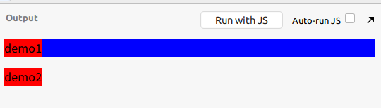
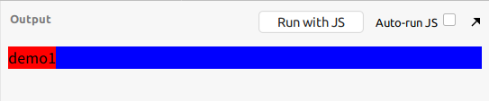

什么是虚拟 DOM
虚拟 DOM，就是说，把真实的 DOM 结构映射成计算机内存中的一段数据结构，然后通过操作这个虚拟的数据结构，最后变成一个新的虚拟 DOM，这个虚拟 DOM 再映射到真实 DOM 上，就完成了真实 DOM 结构的改变
有什么作用
真实 DOM 的结构在发生变化时，假如用 js 去操作所有的 document 元素，那么将会对所有的 DOM 结构进行排列并渲染，这在技术上比较难实现不说，而且也使得页面的性能变得很差，虚拟 DOM 提供了一个方法，即在这个虚拟的数据结构中，若真实 DOM 的结构已经变化，那么先对这个已经变化对应的虚拟数据结构进行对比，提供一个类似 git 的一个 diff 的算法，看看是哪里产生的变化，最后就这个变化渲染出真实 DOM，其他的都不变，这样就实现了一定程度的页面性能的提升
虚拟 DOM Demo
现在尝试实现一个虚拟 DOM 的算法,首先我们先定义一个 VNode,这个就是描述 DOM 的一个数据结构
从整体结构上看，它的构造函数应该接受三个参数,标签 tag/子元素 children/文本 text,
因为 VNode 是一颗树，所以渲染这颗树的时候，为简单起见，用递归方式渲染class VNode {
constructor(tag, children, text) {
this.tag = tag;
this.text = text;
this.children = children;
}
render() { // 递归渲染
if(this.tag === '#text') { // 表示最底层的 node 节点是个 text 文本
return document.createTextNode(this.text);
}
let el = document.createElement(this.tag);
this.children.forEach(vChild => {
el.appendChild(vChild.render());
})
return el;
}
}
然后实现一个创建 VNode 的函数function v(tag, children, text) {
if(typeof children === 'string') {
text = children;
children = [];
}
return new VNode(tag, children, text);
}
假设我要实现的模板是这样的<div>
<p>
<span>demo1</span>
</p>
<span>demo2</span>
</div>
那么我可以这么创建一个 vNodelet vNode = v('div', [
v('p', [
v('span', [ v('#text', 'demo1') ])
]
),
v('span', [ v('#text', 'demo2') ])
]
);
好了，接下来要实现的就是那个关键函数，这个函数就是通过比较 vNode 中变化的部分，将那个变化的部分给渲染出来// parent 为父节点,这个参数是必须要传的
function patchElement(parent, newVNode, oldVNode, index = 0) {
if(!oldVNode) {
// 若相比之前新增了节点
parent.appendChild(newVNode.render()); // 直接添加对应节点
} else if(!newVNode) {
// 若相比之前删除了节点
parent.removeChild(parent.childNodes[index]); // 直接删除对应节点
} else if(newVNode.tag !== oldVNode.tag || newVNode.text !== oldVNode.text) {
// 若相比之前修改了节点
parent.replaceChild(newVNode.render(), parent.childNodes[index]); // 直接替换对应节点
} else {
for(let i = 0; i < newVNode.children.length || i < oldVNode.children.length; i++) {
// 若这对比的这一层节点啥都没变，则继续递归比较节点
patchElement(parent.childNodes[index], newVNode.children[i], oldVNode.children[i], i);
}
}
}
然后就可以用了
首先是 html 代码<div id="root"></div>
然后是提示用的 css 代码p {
background: blue;
}
span {
background: red;
}
最后是 javascriptlet vNode = v('div', [
v('p', [
v('span', [ v('#text', 'demo1') ])
]
),
v('span', [ v('#text', 'demo2') ])
]
);
let parent = document.body.querySelector('#root');
parent.appendChild(vNode.render());
let vNode2 = v('div', [
v('p', [
v('span', [ v('#text', 'demo1') ])
]
)
]
);
patchElement(parent, vNode2, vNode)
效果
使用 patchElement 之前

使用 patchElement 之后
